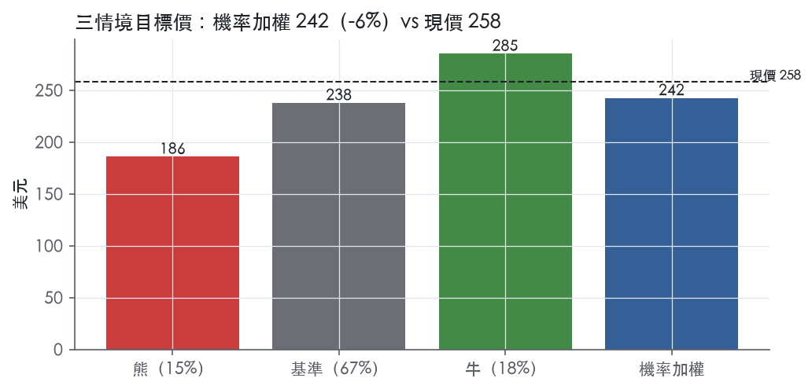
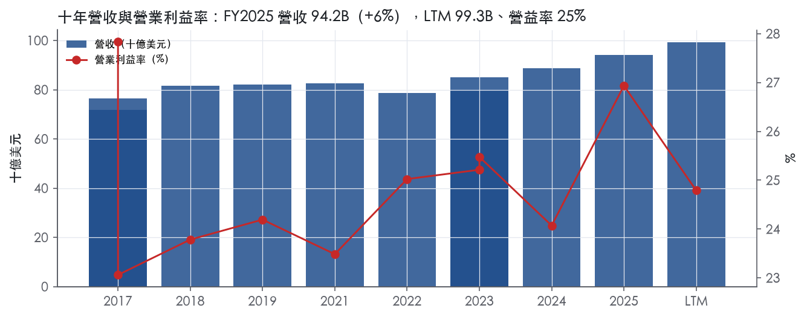
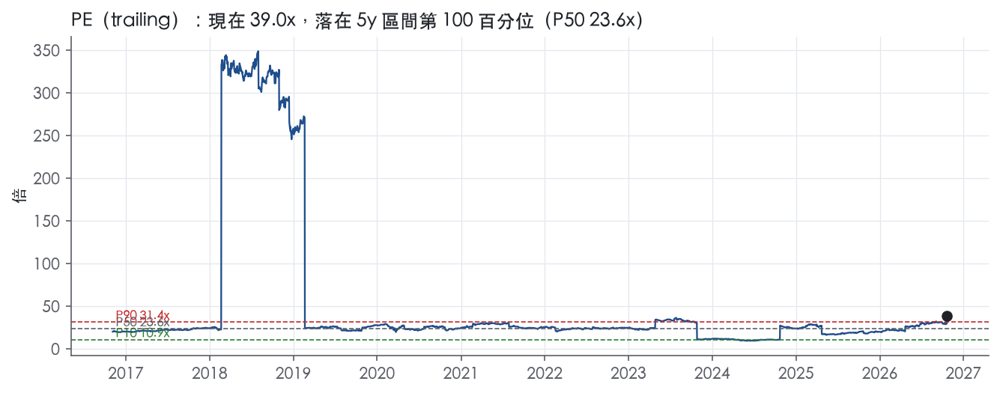
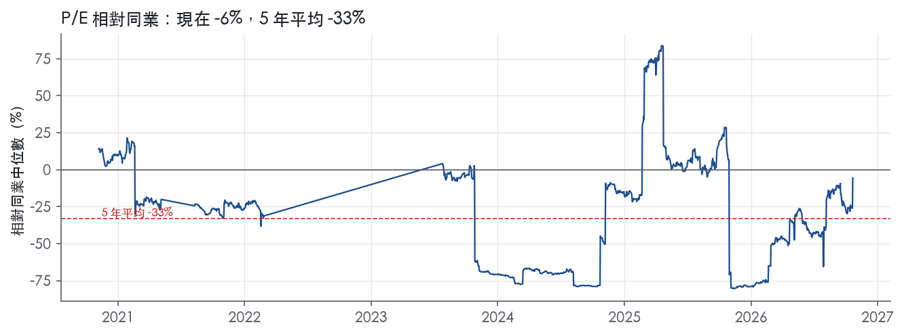
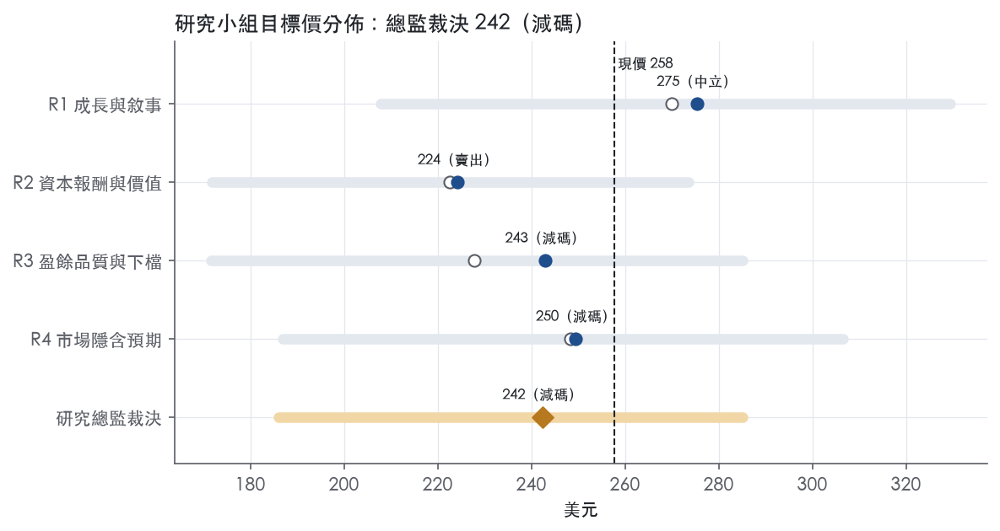

評等總表 › 醫療保健 › JNJ
營收接棒盈餘落後，倍數透支，看空｜評等 減碼｜目標價 242
| 報告日 | 評等 | 目標價 | 當時股價 | 超額報酬 |
|---|---|---|---|---|
| 2026-10-21 | 減碼 | 242 | 258 | -13.4% |
| 2026-10-15 | 賣出 | 235 | 253 | -15.2% |
| 2026-10-09 | 減碼 | 250 | 261 | -12.3% |
| 快評 | 動作 | 結論 |
|---|---|---|
| 2026-10-13 | 提前重開研究小組 | 獲利遠低於預測，滑石粉觸發降評檢查 |
| 評等 | 減碼（邊界，鄰近賣出） |
| 12 個月目標價 | 242 美元 |
| 現價 | 257.78 美元（2026-10-21） |
| 預期報酬 | 股價 -6.0%＋股息 2.0%＝總報酬 -3.9%；同業籃門檻 9.5%，超額 -13.4% |
| 估值方法 | P/E 25.0x，套在第 5–8 季的EPS（也就是一年後的未來四季） |
| 三情境 | 熊 186／基準 238／牛 285 |
| 研究流程 | 四位研究員兩輪辯論＋研究總監裁決 |
| 資料來源 | SEC EDGAR XBRL、Tiingo、FRED（全免費） |
營收接棒盈餘落後，倍數透支，看空（研究總監裁決，四位研究員兩輪辯論後）
評等 減碼（邊界，鄰近賣出）｜12 個月目標價 242 美元（總監三情境機率加權 239 與研究員中位數 246 各半）｜現價 257.78（2026-10-21）
預期報酬：股價 -6.0%＋股息 2.0%＝總報酬 -3.9%。同業籃門檻 9.5%，超額 -13.4%，離賣出的分界不到三個百分點，屬邊界評等（落在其他級距的機率約四成）。
估值方法：P/E 25.0x，套在第 5–8 季的EPS（也就是一年後的未來四季）。三情境：熊 186（15%）／基準 238（67%）／牛 285（18%）。
什麼會讓研究總監改變看法：FY2027指引營運成長或調整後EPS成長中值≥8%且歸因新藥上修，倍數上調至P90 27.6x、轉中性；滑石粉提案遭否決或FY2027營運成長中值≤5.5%，熊機率上調。
| 過去四季（實際，FY2026Q3） | 未來四季 | 第 5–8 季 | 第 9–12 季 | |
|---|---|---|---|---|
| 營收（B） | 99.3B | 105.8B | 112.7B | 119.4B |
| 營收成長 | 7.8% | 6.5% | 6.5% | 6.0% |
| 營業利益率 | 24.8% | 25.5% | 25.5% | 25.5% |
| EPS（美元） | 6.61 | 8.93 | 9.51 | 10.07 |
| EPS 成長 | -36.3% | 35.2% | 6.4% | 5.9% |
| 每股股息（美元） | 5.28 | 5.28 | 5.28 | 5.28 |
| P/E（現價） | 39.0x | 28.9x | 27.1x | 25.6x |
| 股息殖利率（現價） | 2.0% | 2.0% | 2.0% | 2.0% |
過去四季為申報數字；預測為研究總監的假設、程式計算。倍數與殖利率都用現價計算，用來看現價對應各期獲利的高低。
| 項目 | 上次（2026-10-16） | 這次（2026-10-22） | 變動 |
|---|---|---|---|
| 評等 | 賣出 | 減碼 | 變動 |
| 機率加權目標價（美元） | 235 | 242 | +3.0% |
| 超額報酬 | -15.2% | -13.4% | +1.7 pp |
| 目標倍數 | 25x | 25x | — |
| 未來四季營收成長 | 6.5% | 6.5% | +0.0 pp |
| 未來四季營益率 | 25.5% | 25.5% | +0.0 pp |
| 未來四季 EPS（美元） | 8.84 | 8.93 | +1.1% |
| 熊／基準／牛機率 | 15／67／18 | 15／67／18 | — |
程式計算；「未來四季」各自從當次報告的資料起點算。研究總監逐點說明見第八章「與上次報告比較」。
| 情境 | 機率（歷史） | 故事 | 未來四季營收成長 | 第 5–8 季營益率 | 倍數 | 目標價 | 股價漲跌 |
|---|---|---|---|---|---|---|---|
| 熊 | 15%（15%） | 風險表第1條滑石粉提案被否決或超出提列且無第三方保險、第2條STELARA侵蝕快於新藥放量、第4條骨科分拆成本顯著，FY2027指引≤5.5%，倍數回前瞻帶P50 | 5.5% | 24.5% | 21.0x | 186 | -27.8% |
| 基準 | 67%（68%） | STELARA拖累收斂、新藥接棒帶來約6.5%成長，但IPR&D經常化與Genmab權利金使GAAP營益率停在25.5%，調整後EPS追不上營收，倍數由P90以上退到P75 | 6.5% | 25.5% | 25.0x | 238 | -7.8% |
| 牛 | 18%（17%） | FY2027指引顯示新藥驅動的加速≥8%、滑石粉提案獲核准、ICOTYDE與OTTAVA放量、營運槓桿轉正蓋過權利金外流，倍數守在前瞻帶P90 | 7.5% | 27.0% | 27.6x | 285 | 10.6% |
目標價由程式依研究總監的驅動與倍數計算；機率由研究總監給定。括號內是歷史頻率：把這檔股票過去十年 12 個月報酬的波動形狀，置中在基準情境，結果落在各情境附近的比例。

四位研究員用不同方法各自估值，回應研究總監的質疑後交出第二輪，最後由總監逐點裁決。各研究員的主張見第七章，裁決理由見第八章，完整論證見《研究底稿》。
| 立場（一輪→二輪） | 加權目標價（一輪→二輪） | 評等（一輪→二輪） | 第二輪倍數 | 熊～牛目標價 | |
|---|---|---|---|---|---|
| R1 成長與敘事 | 中性→中性 | 270→275 | 中立→中立 | 21.0x | 208～329 |
| R2 資本報酬與價值 | 看空→看空 | 223→224 | 賣出→賣出 | 23.5x | 172～274 |
| R3 盈餘品質與下檔 | 看空→看空 | 228→243 | 賣出→減碼 | 25.2x | 172～285 |
| R4 市場隱含預期 | 看空→看空 | 248→250 | 減碼→減碼 | 25.0x | 187～306 |
| 研究總監裁決 | 看空 | 242 | 減碼 | 25.0x | 186～285 |
目標價由程式依各自的驅動與倍數計算；評等＝機率加權總報酬 − 同業籃門檻。
Johnson & Johnson 是一家持股公司，旗下子公司在全球幾乎所有國家經營健康醫療相關業務，核心聚焦人類健康與福祉¹。公司成立於1887年，在紐澤西州註冊，全球約有138,200名全職約當員工（FTE）¹。公司以兩大業務分部運作：Innovative Medicine（創新藥物）與 MedTech（醫療科技），分別賣給醫療專業人員、醫院、零售商、批發商與經銷商等不同通路¹。本質上這是一家「處方藥+醫材」的雙引擎巨頭，靠規模化的研發管線與專利保護的高單價產品組合維持壁壘。
Innovative Medicine 分部聚焦六大治療領域：腫瘤（前列腺癌、血液腫瘤、肺癌、膀胱癌）、免疫（類風濕性關節炎、乾癬性關節炎、發炎性腸道疾病、乾癬）、神經科學（情緒障礙、神經退化性疾病、精神分裂症）、肺動脈高壓、傳染病（HIV/AIDS），以及心血管與代謝疾病¹。關鍵產品包括 DARZALEX、CARVYKTI、ERLEADA、IMBRUVICA、RYBREVANT/LAZCLUZE、TALVEY、TECVAYLI、STELARA、TREMFYA、XARELTO 等¹。公司最大單一產品 DARZALEX（含 FASPRO）合計約占FY2025總營收15.0%，STELARA占約6.5%，TREMFYA占約5.5%¹。STELARA面臨多國生物相似藥上市，預期將持續侵蝕銷售¹；DARZALEX專利在美國於2029年到期，需支付Genmab權利金，FY2025約為2.4B美元、FY2024約為2.0B美元¹。
MedTech 分部涵蓋心血管（電生理、Abiomed機械循環輔助、Shockwave鈣化病變治療、神經血管）、骨科（關節重建、創傷、脊椎、運動醫學）、手術（含Mentor乳房美容重建）與視力保健（ACUVUE隱形眼鏡、TECNIS人工水晶體）四大領域¹。2025年10月公司宣布計畫分拆骨科業務，目標在初始宣布後18至24個月內完成¹。從最近財報看，兩分部規模相當：FY2026Q3 Innovative Medicine營收16,757M美元、MedTech營收8,642M美元，顯示藥品約占整體營收三分之二、醫材約占三分之一（8k_2026-10-13）。10-K未揭露各分部的詳細毛利率或資本報酬率拆分。
藥品直接銷往零售商、批發商、經銷商、醫院與醫療專業人員供處方使用；醫材則銷往批發商、醫院與零售商，主要由醫師、護理師、眼科醫師與診所使用¹。公司在幾乎所有國家經營業務，國際市場的產品組合、通路與市場特性因國家與文化而異¹。地區結構上美國仍是成長主力：FY2026Q3美國銷售14,959M美元、年增9.1%，國際銷售10,440M美元、報告制年增1.5%（8k_2026-10-13）。美國市場成長明顯快於國際市場，反映美國定價環境與新藥放量速度優於海外、同時國際端受匯率與STELARA生物相似藥侵蝕拖累。
FY2025Q4營收24.56B美元、年增9.1%，毛利率67.6%、營益率22.2%（is/cf/bs數列FY2025Q4）。FY2026Q1營收24.06B美元、年增9.9%，營益率26.1%，EPS 2.14（FY2026Q1數列）。FY2026Q2報告制銷售成長6.6%至25.3B美元，營運成長5.6%，調整後營運成長5.7%；EPS 2.27美元，調整後EPS 2.90美元²。公司當時表示「正朝2026年首度突破1,000億美元年營收的里程碑邁進」²，並將全年指引上調為預估報告制銷售101.1B美元中值、年增7.3%中值，調整後EPS指引上調13美分至11.68美元中值²。
FY2026Q3報告制銷售成長5.9%至25.4B美元，營運成長6.0%，調整後營運成長6.1%；EPS僅0.09美元，主要反映滑石粉訴訟和解特別費用、Firefly Bio收購與Sail Biomedicines策略合作的一次性影響，調整後EPS為2.59美元³。公司再度上調全年指引，預估報告制銷售101.2B美元中值、年增7.4%中值，調整後EPS指引上調6美分至11.10美元中值、年增2.9%中值³。CEO Joaquin Duato表示「這樣的進展，加上對高成長領域的策略性投資，讓我們更清楚看到十年末前達成兩位數成長的路徑」³。四季營收年增率穩定維持在6-10%區間、獲利率因一次性項目波動，顯示核心業務動能穩健但單季GAAP數字易受併購與訴訟科目干擾。
公司表示其長期策略以人力資本為基礎，聚焦吸引招募頂尖人才、發展留任頂尖人才、賦能激勵人才三大面向¹。在產品端，公司強調「研發在新產品與既有產品、製程的改良上，無論內部或外部來源都至關重要」，且「持續投入研發、保護智慧財產權對公司在各業務領域的成功至關重要」¹。近期新聞稿中，公司列舉多項監理里程碑作為成長動能：OTTAVA成為「全球首款檯面整合式軟組織機器人手術系統」取得FDA市場授權、IMAAVY取得wAIHA適應症核准、RYBREVANT FASPRO在頭頸癌獲優先審查資格³。Innovative Medicine的成長動能被歸因於TREMFYA、免疫領域新產品、DARZALEX、CARVYKTI、TECVAYLI、RYBREVANT/LAZCLUZE與ERLEADA在腫瘤領域，以及SPRAVATO與CAPLYTA在神經科學領域的放量，部分被STELARA生物相似藥侵蝕（約690個基點影響）所抵銷³；MedTech的成長則主要來自電生理產品與Shockwave、隱形眼鏡以及骨科創傷產品線³。
公司看法：JNJ的成長引擎本質是「專利懸崖與新藥放量的賽跑」——STELARA持續流失、但CARVYKTI、TREMFYA、RYBREVANT等新一代腫瘤與免疫藥物放量速度足以抵銷並帶動整體營收加速至接近兩位數成長。MedTech因骨科拆分在即，中期增長引擎將更集中在心血管（Shockwave、電生理）與手術機器人（OTTAVA）兩塊，拆分後報表結構會明顯變化，須留意分拆對財務指引與估值倍數的影響。Q3的GAAP淨利骨折式下滑（210M美元）屬一次性訴訟與併購費用所致，不代表核心獲利能力惡化，調整後EPS與全年指引同步上調即為佐證。

JNJ 的護城河評為寬，趨勢穩定；我們有把握未來 10 年以上 ROIC 仍高於資本成本。
護城河的核心是持續補新藥、補新器械的研發與法規能力，而非任何單一專利；這套能力過去已經消化過多次專利到期，報酬率沒有跌破資本成本。
我們不給「變寬」，原因有三：最大產品的美國核心專利 2029 年到期、IRA 政府定價範圍擴大、FCF 利潤率處於十年低點。
無形資產（專利、授權、法規核准、商標）是主要來源。
轉換成本是次要來源，集中在 MedTech。
網路效應、成本優勢、效率規模三類都沒有 10-K 原文證據，不列入。原物料方面，10-K 只說「generally readily available from multiple sources」¹，看不出成本端有結構性優勢。
看得到，ROIC 與毛利率兩項都符合寬護城河的特徵；FCF 利潤率是唯一的衝突點。
資料說明：資料包年度表的期別標籤有重複（兩個 FY2017、兩個 FY2023），也缺 FY2020。以下只引用量化底稿的彙總統計，不引用單一年度的歸屬。
ROIC 高且穩定
利潤率穩定
衝突一：FCF 利潤率落在十年低點
衝突二：ROIC 略低於高點與平均
ROE 不適合當護城河指標
最大威脅是產品集中度遇上專利到期。
第二個威脅是政府定價。
第三個威脅是研發競爭與授權依賴。
骨科分拆不構成侵蝕。公司計畫分拆骨科，目標在宣布後「18 to 24 months」內完成¹。我們判斷分拆後剩餘業務的護城河組成不變。
寬護城河支持目標倍數相對製藥同業溢價，並支持估值模型採用 10 年以上的超額報酬延續期，而不是 5 年。
溢價幅度應該受 2029 年 DARZALEX 專利到期與 IRA 定價壓力限制，不宜以自身 5 年 P90 以上的水準為錨。現在 P/E 39.0x 位於 5 年 99.9% 分位，但 LTM GAAP EPS 6.61含 Q3 一次性費用，倍數被扭曲。
建議以 EV/EBITA 為主要錨點：現值 22.4x，5 年 P50 為 17.4x、P90 為 21.6x。目標倍數落在自身歷史中位數到 P90 之間，比追隨現價更合理。
| 指標 | 最新 | 十年平均 | 標準差 | 最低 | 最高 |
|---|---|---|---|---|---|
| ROIC | 21.2% | 21.8% | 2.2% | 16.9% | 24.4% |
| 毛利率 | 67.9% | 68.1% | 1.5% | 65.6% | 70.3% |
| 營業利益率 | 26.9% | 24.9% | 1.5% | 23.1% | 27.8% |
| FCF 利潤率 | 20.9% | 22.8% | 1.4% | 20.9% | 25.1% |
| ROE | 35.0% | 26.0% | 11.6% | 2.0% | 48.3% |
程式計算。資本成本代理值（10 年債＋5%）：9.0%；ROIC 平均減資本成本：12.8%；ROIC 有資料的 9 年中，高於資本成本 9 年。
LTM營業現金流／淨利1.63x、自由現金流／淨利1.28x，兩項皆為綠燈，應計比率-5.1%同樣是綠燈。但程式標出五次淨利率跳動超過十個百分點的紅旗，加上本季GAAP每股盈餘因一次性特別費用暴跌至0.09美元³，說明報表淨利本身的雜訊很大，需要靠非GAAP調整項才能看出經營本質。稀釋股數年變動與回饋股東比例轉黃、應收帳款與存貨成長率領先營收9-10個百分點，這些是需要持續觀察的早期訊號，但目前尚未惡化到紅燈程度。
現金是跟上的，但這次LTM視窗的分母被本季特別費用壓低，讀數需要打折看。LTM營業現金流／淨利1.63x、自由現金流／淨利1.28x均優於1.00x與0.90x的綠燈門檻，十年平均更高達2.75x與2.31x，顯示公司長期現金生成能力強於帳面淨利。但LTM淨利本身已遭Q3 2026的特別費用壓低——GAAP淨利從去年同期5,152M美元跌到210M美元，年減95.9%³——分母縮小會讓現金／淨利倍數虛高，不能簡單解讀為盈餘品質「變得更好」。應計比率LTM為-5.1%、近三年平均0.8%、十年平均-3.2%，皆落在≤0%的綠燈區間，顯示淨利與現金流的缺口不是靠應計項目堆出來的。真正要留意的是應收帳款與存貨：FY2025應收帳款成長超越營收成長9.7個百分點、存貨成長超越營收成長8.0個百分點，兩者都落在黃燈區，這代表營運資金在悄悄吃掉一部分現金轉換效率，雖然還沒到15個百分點的紅燈門檻。
這次調整的缺口異常大，核心是訴訟和併購，不是單純美化盈餘的攤銷項目。Q3 2026 GAAP每股盈餘0.09美元，調整後每股盈餘2.59美元，公司明確指出GAAP數字反映「一次性特別費用，源自滑石粉訴訟提議和解方案、收購Firefly Bio, Inc.，以及與Sail Biomedicines的策略合作」³。調整後淨利6,339M美元，較去年同期6,801M美元仍年減6.8%³，說明即使扣除特別費用，核心盈餘也在走弱，不是單純GAAP雜訊問題。公司的非GAAP淨利定義是「排除稅後無形資產攤銷費用與特別項目」³——無形資產攤銷是真實的非現金會計處理，可以合理加回；但滑石粉訴訟和解相關費用雖然列為「特別項目」，本質上未來很可能轉成真實現金支出，10-K本身也警告「公司過去已經、未來也可能被要求支付重大金額作為這些案件的和解或判決結果，可能超過已提列的準備金」⁴。因此在估值時，攤銷項目可以加回，但訴訟相關特別費用只能視為「時間點不確定的真實成本」，不該完全當作一次性雜訊剔除。自由現金流方面，公司揭露Q3 YTD約15,100M美元，去年同期14,226M美元³，現金面並未同步惡化，這也支持把本次GAAP淨利暴跌定性為會計期間認列問題而非現金枯竭。
槓桿和付息能力目前都很穩，資本配置的訊號則轉為溫和保守。淨負債／EBITDA LTM為0.84x、近三年平均0.55x、十年平均0.40x，全數落在≤1.50x的綠燈區，遠低於3.00x的紅燈門檻。利息保障倍數LTM為25.0x、近三年27.5x、十年平均48.8x，同樣全綠，顯示利息負擔對營業利益幾乎沒有壓力。但最新快照顯示淨負債27.42B美元，企業價值658.62B美元，市值631.20B美元，槓桿雖低，倍數本身已站在歷史高分位——EV/EBITDA目前20.1x，五年分位高達96.9%——意味著即使資產負債表乾淨，股價已經不便宜，不是靠低槓桿去撐估值空間。資本配置上，（股利＋回購）／淨利LTM降到49.0%，低於十年平均75.2%，落在黃燈區，近三年平均則更低至18.0%，顯示過去幾年公司把更多現金留做併購與業務分割（例如骨科業務分拆計畫）而非股東回饋；10-K揭露「2025年10月，公司宣布計畫分拆骨科業務，目標在初始宣布後18至24個月內完成」¹，這會持續占用管理層的資本配置彈性。
淨利率FY2017→FY2017跳動-21個百分點：資料包同一財年出現兩筆不同淨利數字（16.54B／EPS 5.93對比1.30B／EPS 0.47），對應的是2017年稅改一次性遞延稅負重估（Tax Cuts and Jobs Act所致的過渡稅/視同匯回稅），屬於典型的稅法變動一次性項目，不是經營性盈餘惡化。 淨利率FY2017→FY2018跳動+17個百分點：這是上述2017年稅改一次性稅負認列後，2018年回到正常稅率基礎的「反彈」，屬於同一事件的鏡像效果，可解釋。 淨利率FY2023→FY2023跳動+19個百分點：資料包同一財年再度出現兩筆淨利（17.94B／EPS 6.73對比35.15B／EPS 13.72），對應的是2023年JNJ分拆消費者健康業務（Kenvue）交易完成後認列的大額處置利得，屬於一次性資本交易，不是核心業務盈餘跳升。 淨利率FY2023→FY2024跳動-25個百分點：這是Kenvue分拆利得認列後次年度回到正常基礎的反轉，同屬上述一次性事件的延續效果，可解釋。 淨利率FY2024→FY2025跳動+13個百分點：FY2024淨利14.07B到FY2025淨利26.80B（EPS 5.79到11.03）的跳升，時間點與滑石粉訴訟相關準備金認列及後續調整重疊，10-K揭露公司就這類訴訟「解決或增加準備金，在任何報告期間都可能對公司營運結果與現金流產生重大不利影響」⁴，判斷FY2024的低基期較可能是當年認列較大訴訟或重整相關費用，FY2025則回到較正常水平，屬於會計期間認列時點問題，非經營性轉強或轉弱，但因原文未提供逐年訴訟費用的具體金額拆解，此判斷帶有不確定性，建議估值研究員對FY2024/FY2025兩年GAAP淨利都做標準化處理再比較。 稀釋股數年變動黃燈（LTM +0.3% vs 三年均-3.0%）：公司本季完成收購Firefly Bio, Inc.並與Sail Biomedicines達成策略合作³，若交易含股票對價或SBC發行速度超過買回速度，會使稀釋股數由降轉平，屬於可解釋的短期現象，但若併購頻率上升，需要持續追蹤是否轉為真紅燈。 （股利＋回購）／淨利黃燈（LTM 49.0% vs 十年均75.2%）：公司近期現金優先用於骨科分拆準備與併購整合（Firefly Bio、Sail Biomedicines）¹³，股東回饋占比暫時低於長期平均，屬於資本配置優先順序調整，不是財務壓力訊號。 應收帳款／存貨成長超越營收黃燈：原文未提供拆解原因，猜測與MedTech心血管／電生理產品線（Shockwave等）鋪貨擴張及IRA選定藥品2026年起強制定價前的庫存調整有關，但缺乏原文直接證據支持，列為需要下一季追蹤的灰色地帶，而非已證實的紅燈。
估值應以調整後盈餘為主幹，但對滑石粉訴訟相關特別費用要保留「真實但時點不確定的現金成本」地位，不能像攤銷費用一樣全額加回。槓桿指標全線綠燈，不構成限制倍數的理由，目前20.1x的EV/EBITDA、39.0x的P/E站在過去五年90%以上分位，估值貴是市場對管線與分拆題材的溢價，不是靠低品質盈餘撐出來的。考慮到稀釋股數與營運資金方向雙雙轉黃、GAAP淨利十年內已出現五次大幅跳動，建議對短期GAAP EPS給予折價評估，改用調整後EPS搭配FCF做核心估值錨點。
| 項目 | LTM | 近三年 | 十年 | 燈號 | 規則 |
|---|---|---|---|---|---|
| 營業現金流／淨利 | 1.63x | 1.10x | 2.75x | 綠 | ≥1.00x 綠、<0.80x 紅 |
| 自由現金流／淨利 | 1.28x | 0.89x | 2.31x | 綠 | ≥0.90x 綠、<0.60x 紅 |
| 應計比率（(淨利−CFO)／平均總資產） | -5.1% | 0.8% | -3.2% | 綠 | ≤0.0% 綠、>5.0% 紅 |
| SBC／營收 | 1.4% | 1.4% | 1.3% | 綠 | ≤3.0% 綠、>8.0% 紅 |
| 淨負債／EBITDA | 0.84x | 0.55x | 0.40x | 綠 | ≤1.50x 綠、>3.00x 紅 |
| 利息保障倍數（營業利益／利息） | 25.0x | 27.5x | 48.8x | 綠 | ≥8.00x 綠、<3.00x 紅 |
| 稀釋股數年變動 | 0.3% | -3.0% | -1.5% | 黃 | ≤0.0% 綠、>3.0% 紅 |
| （股利＋回購）／淨利 | 49.0% | 18.0% | 75.2% | 黃 | ≥50.0% 綠、<0.0% 紅 |
| 應收帳款成長 − 營收成長（FY2025） | +9.7pp | — | — | 黃 | ≤5pp 綠、>15pp 紅 |
| 存貨成長 − 營收成長（FY2025） | +8.0pp | — | — | 黃 | ≤5pp 綠、>15pp 紅 |
程式計算；燈號以 LTM（無則近三年平均）判定。
| 風險 | 觸發指標（看什麼數字、在哪裡看） | 對 EPS 的影響方向與粗略幅度 | 未來 12 個月發生機率（高／中／低） | 出處 |
|---|---|---|---|---|
| 滑石粉等重大訴訟和解金額超出提列 | 季度 GAAP 淨利與 EPS 是否再出現特別費用（如 FY2026Q3 淨利僅 0.21B、EPS 0.09 對比 FY2025Q3 淨利 5.15B）；10-K Note 19 揭露的訴訟提列變動 | 負向、大：單季已實際發生 GAAP 淨利年減 95.9%、EPS 由 2.12 降至 0.09 | 高 | ³⁴ |
| STELARA 生物相似藥侵蝕速度快於新藥放量 | Innovative Medicine 分部季度營收年增率、STELARA 對成長的基點拖累（FY2026Q3 為 690 基點） | 負向、中：若拖累幅度擴大但新藥放量不足以抵銷，壓縮 Innovative Medicine 營益率 | 中 | ³¹ |
| 估值已處於歷史高分位，任何成長放緩會觸發倍數重估 | trailing P/E（現 39.0x，5年分位 99.9%）、EV/EBITDA（20.1x，分位 96.9%） | 負向、大：倍數本身不影響 EPS，但同樣 EPS 下倍數回落至 5年中值 23.6x 意味股價下行空間大 | 中 | 量化底稿（/） |
| Orthopaedics 分拆執行風險（時程延後、成本超支、分拆後報表結構改變） | 公司是否按 18–24 個月時程公告進度、分拆相關一次性費用科目金額 | 負向、中：公司明言「分拆成本將顯著」，且可能無法完全實現預期戰略與財務效益 | 中 | 10-K 年報 FY2025 Item 1A（風險因素） |
| IRA Medicare 定價與 340B 制度擴大適用，壓縮美國藥價 | 公司受政府定價覆蓋的產品清單是否擴大（公司揭露 2026 年起部分產品已受政府定價）；美國 Innovative Medicine 分部季度單價/數量拆分 | 負向、中：美國銷售佔比高且是成長主力（FY2026Q3 美國年增 9.1%），定價政策收緊會直接壓縮美國端毛利 | 中 | 10-K 年報 FY2025 Item 1A（風險因素） |
訴訟和解成本失控是當下最直接衝擊盈餘的風險，FY2026Q3 單季已實證：GAAP 淨利從 5.15B 美元暴跌至 0.21B 美元，EPS 由 2.12 降到 0.09，公司明確歸因於「滑石粉訴訟和解提議的一次性特別費用」³。公司在 10-K 中承認「無法預測訴訟最終結果」，且「公司不購買第三方產品責任險，僅透過自有captive保險公司承保有限額度」⁴，意味超額部分完全由公司自行吸收。這條風險的特點是已經發生、且規模可觀測（看每季 GAAP 淨利與特別費用科目），不是假設性風險。
STELARA 生物相似藥侵蝕是結構性盈餘風險，FY2026Q3 單季對 Innovative Medicine 操作成長的負面貢獻已達約 690 個基點³，若 DARZALEX、CARVYKTI、TREMFYA 等新藥放量速度不及預期，侵蝕速度與放量速度的賽跑會失衡，直接壓縮分部營益率。DARZALEX 美國專利將在 2029 年到期、且須持續支付 Genmab 權利金（FY2025 約 2.4B 美元）¹，意味未來幾年主力產品的專利懸崖壓力只會疊加、不會緩解。
估值分位過高本身不是「公司基本面」風險，而是「市場定價已不容錯」的風險：現在 trailing P/E 39.0x 站在過去五年 99.9% 分位、EV/EBITDA 20.1x 站在 96.9% 分位，遠高於 10 年中值（P/E 24.3x、EV/EBITDA 15.4x）。這代表市場已經為「兩位數成長路徑」（CEO 語：「更清楚看到十年末前達成兩位數成長的路徑」³）完全定價，一旦任何上述風險兌現導致成長不如預期，倍數壓縮的殺傷力會疊加在 EPS 下修之上。
Orthopaedics 分拆執行風險是中期的結構性不確定因素。公司在 10-K 中新增一整節揭露此風險，明確說「分拆成本將顯著」、「可能無法實現部分預期戰略與財務效益」、且分拆後「股價可能顯著波動」⁴。目標時程是宣布後 18 至 24 個月完成，監測點是公司是否按時程推進各項法規核准與董事會核准⁴。分拆若延後或最終未完成，將持續對 MedTech 分部估值造成不確定性折價。
IRA 與 340B 定價壓力是美國市場的結構性逆風，10-K 指出「IRA 已改變 Medicare Part D 給付設計，且自 2026 年起已使公司部分產品受政府訂價管制，未來可能擴大至更多產品」⁴。由於美國銷售佔公司營收比重高且是近四季成長主力（FY2026Q3 美國年增 9.1% vs 國際僅 1.5%³），任何美國定價端的進一步收緊都會直接衝擊成長最快的那塊業務。
GAAP 與 Adjusted EPS 的差距正在擴大，掩蓋核心獲利能力的雜訊風險。FY2026Q3 GAAP EPS 僅 0.09 美元，但 Adjusted EPS 為 2.59 美元，差距主要來自訴訟和解、Firefly Bio 併購與 Sail Biomedicines 合作三項一次性項目疊加³。隨著公司持續進行併購與策略合作，未來每季都可能出現類似的「GAAP 失真、調整後數字才反映核心」的狀況，投資人若只看 GAAP 頭條數字容易誤判，但調整後數字的剔除項目是否「真的一次性」也值得持續檢視。
滑石粉和解一旦定案，後續現金流出時程與規模會是觀察重點，而非僅看損益表提列。公司 10-K 僅揭露「可能需支付顯著金額」但未明確給出和解總額區間，建議持續追蹤公司法說會與 10-Q 中關於和解基金分期支付安排的揭露，因為大額現金流出會直接影響淨負債水準（現淨負債 27.42B 美元）與未來槓桿空間。
現價 257.78 對應 trailing（過去四季）P/E 39.0x、EV/EBITDA 20.1x、EV/EBITA 22.4x、EV/Sales 6.6x、FCF 殖利率 3.3%。主要估值倍數 P/E 現在 39.0x，落在5 年區間第 100 百分位（P10／P50／P90 = 10.9x／23.6x／31.4x）。

把程式的機械基準預測放到現價下，市場付的前瞻倍數是：P/E（未來四季） 29.6x、P/E（第 5–8 季） 27.9x。反推 DCF 顯示市價隱含未來五年營收年成長 11.8%（WACC 9.0%、終值成長 3.0%、FCF 利潤率 23.4%，SBC 不加回）。
| 倍數 | 現在 | 5 年 P10 | 5 年 P50 | 5 年 P90 | 現在分位 | 全期 P50 |
|---|---|---|---|---|---|---|
| P/E | 39.0x | 10.9x | 23.6x | 31.4x | 99.9% | 24.3x |
| EV/EBITDA | 20.1x | 13.2x | 15.7x | 19.1x | 96.9% | 15.4x |
| EV/EBITA | 22.4x | 14.6x | 17.4x | 21.6x | 96.7% | 17.0x |
| EV/EBIT | 26.7x | 17.6x | 20.9x | 26.1x | 95.8% | 20.7x |
| EV/Sales | 6.6x | 4.4x | 5.4x | 6.6x | 90.3% | 5.0x |
| P/S | 6.4x | 4.2x | 5.1x | 6.4x | 88.7% | 4.8x |
| P/FCF | 30.7x | 18.6x | 23.8x | 29.7x | 94.3% | 21.1x |
trailing 倍數（股價 ÷ 過去四季）；分位以每個交易日計算。
同業籃：ABBV, ABT, ALNY, AMRX, ALKS, ACAD（SIC 2834 同業 61 家中，CY2025 營收最接近的 6 家）。評等門檻 9.5%：同業「倍數不變下持有一年」的隱含報酬中位數（＝ FCF 殖利率 ×(1＋g)＋g，g 為 5 年營收年複合成長並夾在 −2%～8%），每家夾在 0～15%、P/E 低於 5 倍視為資料可疑而排除，中位數再限制在 10 年債到 10 年債＋5% 之間（同業原始中位數 10.1%）；排除：ALNY（隱含報酬算不出來）。
| 代號 | 市值 | 5 年營收 CAGR | 營益率 | ROIC | P/E | 5 年 P/E 中位數 | EV/EBITDA | P/FCF | 隱含報酬 |
|---|---|---|---|---|---|---|---|---|---|
| JNJ | 631.2B | 2.7% | 24.8% | 21.2% | 39.0x | 23.6x | 20.1x | 30.7x | 6.0% |
| ABBV | 504.4B | 6.0% | 26.2% | 15.8% | 80.5x | 50.6x | 22.9x | 27.7x | 9.8% |
| ABT | 175.1B | 5.1% | 17.1% | 11.3% | 28.1x | 29.3x | 18.6x | 23.7x | 9.5% |
| ALNY | 30.1B | 49.8% | — | — | — | — | — | — | — |
| AMRX | 6.6B | 8.7% | 14.6% | 16.5% | 41.4x | — | — | 51.8x | 10.1% |
| ALKS | 7.3B | 7.3% | 7.0% | — | 113.7x | — | 45.5x | 32.9x | 10.5% |
| ACAD | 3.5B | 19.4% | 7.6% | — | 9.1x | — | — | 23.9x | 12.5% |
| 同業中位數 | 8.0% | 14.6% | 15.8% | 41.4x | 40.0x | 22.9x | 27.7x | 9.5% |
全部 trailing，程式以各公司 SEC XBRL 與 Tiingo 行情計算；第一列為本檔。
P/E 相對同業中位數：現在 -5.7%，過去 1 年平均 -46.8%、3 年 -36.5%、5 年 -33.1%；EV/EBITDA 相對同業中位數：現在 -12.3%，過去 1 年平均 -3.6%、3 年 -12.5%、5 年 -3.5%。

事後實現前瞻倍數帶（P/E，2018-11-12..2025-11-10）：P10／P50／P90 = 12.4x／21.8x／27.6x。它是每個交易日的股價除以之後四季實際實現的指標；一年後，今天的第 5–8 季正是那時的未來四季，所以這條帶是 12 個月目標價的同口徑倍數。因為用的是事後實際而非當時預期，過去成長超乎預期的公司這條帶會偏低。
程式的機械基準（成長率從過去四季年增率三年收斂到 6%、利潤率持平）用 事後實現前瞻 P/E P50 估值得到 201（-22.0%），市場現行前瞻倍數（現價 ÷ 基準 未來四季指標）一年後持平，套在基準 第 5–8 季指標得到 273。這兩個數字只是參考點，不是本報告的目標價；研究員對這個定價的回應在第七章。
下表是每位研究員第一輪（各自獨立）與第二輪（回應研究總監的質疑後）的結果。目標價全由程式依各自的假設計算。
| 立場（一輪→二輪） | 加權目標價（一輪→二輪） | 評等（一輪→二輪） | 第二輪倍數 | 熊～牛目標價 | |
|---|---|---|---|---|---|
| R1 成長與敘事 | 中性→中性 | 270→275 | 中立→中立 | 21.0x | 208～329 |
| R2 資本報酬與價值 | 看空→看空 | 223→224 | 賣出→賣出 | 23.5x | 172～274 |
| R3 盈餘品質與下檔 | 看空→看空 | 228→243 | 賣出→減碼 | 25.2x | 172～285 |
| R4 市場隱含預期 | 看空→看空 | 248→250 | 減碼→減碼 | 25.0x | 187～306 |
| 研究總監裁決 | 看空 | 242 | 減碼 | 25.0x | 186～285 |
目標價由程式依各自的驅動與倍數計算；評等＝機率加權總報酬 − 同業籃門檻。
分歧度：第一輪 加權目標價 223～270（區間＝現價的 18%）· 倍數 21～25x · 立場 中性×1、看空×3；第二輪 加權目標價 224～275（區間＝現價的 20%）· 倍數 21～25.2x · 立場 中性×1、看空×3。

| 研究員 | 第二輪主張 | 堅持的理由 |
|---|---|---|
| R1 成長與敘事 | 中性，企業價值倍數 21.0x，貼近自家五年帶上緣。 | 不改用前瞻 P/E：GAAP EPS 被一次性項目扭曲，歷史帶偏低。 |
| R2 資本報酬與價值 | 看空，P/E 23.5x，靠近前瞻 P/E 帶中位數。 | 投入資本報酬率 21.2% 低於十年平均 21.8%，倍數不該上調。 |
| R3 盈餘品質與下檔 | 偏空，P/E 25.2x；盈餘扎實，看空只因價格。 | 倍數高位來自類股重評；滑石粉賠付是多年現金流出，不算一次性。 |
| R4 市場隱含預期 | 偏空，P/E 25x；市場付的 27.9x 一年內會下修。 | 熊情境機率 15% 高於歷史：滑石粉和解風險高，公司沒有第三方保險。 |
每位研究員的逐條回應與完整論證見《研究底稿》（JNJ_研究底稿_2026-10-22.docx）。
| 分歧點 | R1 | R2 | R3 | R4 | 什麼資料會分出勝負 |
|---|---|---|---|---|---|
| 目標倍數分位 | 21.0x EBITA@ntm，貼自家 trailing 帶 P90 21.6x，只比市場持平低 6% | 23.5x eps@q5_q8，前瞻帶 P50–P75 偏 P50：ROIC 無新台階 | 25.2x＝前瞻帶 P75：絕對高位是類股重評 | 25x≈P75：修正對象是市場付的 27.9x | 2027-01-31 FY2027 指引的調整後 EPS 成長中值；滑石粉提案的核准節點 |
| rev_growth_y2 | 6.8% | 6.5%：STELARA 順風與 ERLEADA 2028 IRA 互抵 | 6.0%：不給加速 | 7.0%：STELARA 基期數學全收 | FY2027 營運成長指引中值；FY2026Q4 新聞稿的週數；2027Q2 STELARA 拖累 bps |
| op_margin_y2／y3 | 26.0／26.0 | 25.5／25.5 | 26.0／26.0 | 26.5／26.5 | FY2027 調整後 EPS 指引成長對營收成長；2027Q1–Q2 GAAP 營益率 |
| 牛熊取法與機率 | 熊 17x EBITA（13%）／牛 24x（17%） | 熊 19.5x（13%）／牛 27x（15%） | 熊 20x（11%）／牛 27.6x（18%） | 熊 21x（15%）／牛 29x（16%） | 滑石粉提案核准或否決；FY2027 指引中值 ≤5.5% 或 ≥8% |
倍數：選 R4，25x eps@q5_q8。 四人的差別是分位，不是尺。R1 的 21x 貼著自家 trailing EV/EBITA 帶 P90（21.6x），只比市場持平倍數低 6%（程式檢查表），他用前瞻 P/E 帶交叉驗證也承認「落在上緣」；寬護城河（護城河章）與成長高於帶期 5 年 CAGR 2.7%（同業表）這兩條理由，R3、R4 同樣拿來支撐高於 P50，所以只能把倍數推到 P75，推不到 P90。要站上 P90 或持平 29.6x，盈餘得跟上營收，而資料相反：2026 調整後 EPS 指引中值成長 2.9%、營收 7.4%，Q3 調整後 EPS 年減 7.5%³；DARZALEX（FY2025 營收 15.0%）美國專利 2029 年到期、ERLEADA 2028 年進 IRA 議價¹，一年後都進入市場的兩年視窗；滑石粉提案的現金不在淨負債 27.42B 裡；股數 LTM +0.3%，回購停擺。R2 偏向 P50 的理由「ROIC 沒有新台階」不夠：21.2% 與十年平均 21.8% 的差距在一個標準差內（護城河章）；而 EV/EBITDA 相對同業折價 −12.3% 等於 3 年平均 −12.5%（同業表），絕對倍數的高位是類股重評、JNJ 自身沒被額外重評，R3 這一點成立，R4 的更正（對 1 年平均 −3.6% 是相對降評）不改變結論。尺的部分：Q3 EPS 0.09 是 trailing 失真，Q5–Q8 EPS 是不含特別項目的預測；帶的偏誤兩向（13.72、11.03 對 5.79），採 R4 的「大致無偏」。骨科分拆後 RemainCo 可能重評，但 10-K 明言分拆成本「顯著」、落地時點橫跨視窗，不給。
rev_growth_y2：選 R2，6.5%。 R3 的 6.0% 沒處理 Q3 STELARA 拖累 690 個基點³隨基期縮小而遞減的數學；R4 的 7.0% 把順風全收，卻沒扣三件事：MedTech 營運成長 2.5%、國際報告制 1.5%³；報告制 7.4% 對營運 6.9% 的匯率順風在本行美元 121.6 持平下消失；財年結束日 0103（快照）顯示 FY2026 可能是 53 週年度（R3 提出，），Q4 的加速有一部分是日曆效果，FY2027Q4 會遇到高基期。ERLEADA 2028 年的 IRA 價格落在 Q5–Q8，與 STELARA 順風互抵，R2 的設定最完整。y1 同取 6.5%：四人對帳一致顯示指引中值 101.2B 隱含的 Q4 快於 Q3 的 5.9%、其餘三季在 6% 附近，本部營收預測誤差中位數 +0.3% 偏高，不往基準 7.2% 靠。y3 維持基準 6.0%，DARZALEX 只算在倍數（R2 V3），避免重複計算。
op_margin：y1 25.5% 四人一致；y2、y3 選 R2，25.5%。 十年平均營益率 24.9%（護城河章），FY2024 24.1%、FY2025 26.9% 是十年最高；2026 的兩個乾淨季 26.1%、28.0% 對 2025 同期 28.8%、27.8%（／Q2、FY2025Q1／Q2）沒有上台階，Q3 由 29.2% 掉到 22.9%；12 個月內已有兩個 IPR&D 重季（FY2025Q4 22.2%、FY2026Q3 22.9%），7 月指引中值由 11.68²重設到 11.04³，CEO 明言持續「對高成長領域的策略性投資」。R1／R3 的 26.0% 要 2027–28 停在十年最高附近，R4 的 26.5% 更高，都沒有證據。預測紀錄同方向：機械基準營業利益誤差中位數 +11.1%、R1 +4.2%、R3 +4.5% 系統性偏高，R2 −1.1%。25.5% 已高於十年平均，是我給的上限。
情境取法：own。 熊取 R4（21x≈前瞻帶 P50，營收 5.5／4.5／4.0、營益率 25.0／24.5／24.5）。R2／R3 的 19.5–20x 落在 P25–P50 之間，比各自基準低 23–29%（程式對照），而 JNJ 十年置中分布 ≤−20% 的頻率是 0%（歷史基準率）：要到那裡類股必須同時回落，那不是公司特有的熊；R1 的 17x EBITA（207.81）又淺於風險表第 1 條的規模。牛取 R3（27.6x＝P90，營收 7.5／8.0／8.5、營益率 y2 27.0／y3 27.5）；R4 的 29x 等於市場持平，是牛情境的上限而非中位。
漂移與總經。 R3 靠攏比例 74%，但逐項都有來源：機率回應 Q1、y1 回應 Q5、熊利潤率回應 Q2、倍數 24→25.2x 依據我轉發的同業表（他第一輪看不到），不退回；R1、R2、R4 的改動都對應我的意見或轉發證據，加權變動在 ±2% 內。drift_rejections 為空。總經偏離四人皆無，macro_deviations 為空。R2 用「FCF 殖利率 3.3%、股息率 2.0% 低於 10 年債 5.19%」支撐看空，違反利率不重複計算，這條理由剔除；回饋率 49% 低於十年平均 75.2%（財務體質章）是個股理由，保留。
機率從歷史出發：牛比基準高約兩成，對應「≥+10%」的歷史比例 17%；熊比基準低兩成多，R2 同距離的程式對照是 13%。18／67／15 偏離不到 3 個百分點，牛高於熊與分布右偏一致（≥+20% 10%、≤−20% 0%）。熊不往 13% 退的公司特有理由：滑石粉提案在視窗內有核准節點，FY2025Q1 的 11.00B 淨利是前一次提案失敗後的回沖，否決不是假設性風險；2027 年 1 月指引是 IRA 完整入基期、又承擔分拆成本的第一份（風險表第 4、5 條）。牛多給 1 個百分點：同一份指引若 ≥8%，加上骨科 Form 10 與 OTTAVA 放量，都是有日期的事件。
差在倍數，不在一年內的盈餘：市場對基準 Q5–Q8 EPS 付 27.9x，高於前瞻帶 P90 27.6x，我們給 25x；我們的 Q5–Q8 EPS 因營益率 25.5% 高於基準 24.8%，反而略高於機械基準。五年尺度才差在成長：反推 DCF 隱含 11.8%，我們是 6.5%。立場看空，評等由程式依加權總報酬減門檻 9.5% 決定；連市場持平的 273 也只有 8.0% 總報酬，低於門檻，立場與評等一致。
現價 257.78 → 點估目標價 238 → 機率加權目標價 239 → 目標價 242，差距拆成五段：成長順延 +15 美元（市場現行倍數 29.6x 一年後持平、獲利照機械基準）；倍數差 -42 美元（總監倍數 25.0x vs 市場持平倍數 29.6x，同一機械基準預測）；盈餘差 +7 美元（總監預測的第 5–8 季EPS 0.0B vs 機械基準 0.0B，同一倍數）；情境不對稱 +1 美元（機率加權減點估）；研究小組平均 +4 美元（總監機率加權 239 與研究員第二輪中位數 246 各半）。各段相加等於目標價減現價。本階段未接賣方共識，差距以市場隱含預期為對照。
| 驅動 | 機械基準 | 研究總監 | 差異 |
|---|---|---|---|
| 未來四季營收成長 | 7.2% | 6.5% | -0.7 pp |
| 第 5–8 季營收成長 | 6.6% | 6.5% | -0.1 pp |
| 第 9–12 季營收成長 | 6.0% | 6.0% | ＝ |
| 未來四季營益率 | 24.8% | 25.5% | +0.7 pp |
| 第 5–8 季營益率 | 24.8% | 25.5% | +0.7 pp |
| 第 9–12 季營益率 | 24.8% | 25.5% | +0.7 pp |
| D&A／營收 | 8.2% | 8.2% | ＝ |
| 資本支出／營收 | 5.6% | 5.6% | ＝ |
| SBC／營收 | 1.4% | 1.4% | ＝ |
| 稅率 | 15.7% | 15.7% | ＝ |
| 股數年變動 | 0.8% | 0.3% | -0.5 pp |
研究總監只寫偏移，未寫的沿用基準。
| 期 | 營收 | 成長 | 營益率 | 營業利益 | EBITDA | EBITA | 淨利 | EPS | FCF | 期末淨負債 |
|---|---|---|---|---|---|---|---|---|---|---|
| 未來四季 | 105.8B | 6.5% | 25.5% | 27.0B | 35.6B | 32.1B | 21.9B | 8.93 | 26.1B | 9.2B |
| 第 5–8 季 | 112.7B | 6.5% | 25.5% | 28.7B | 37.9B | 34.2B | 23.4B | 9.51 | 27.9B | -10.8B |
| 第 9–12 季 | 119.4B | 6.0% | 25.5% | 30.5B | 40.2B | 36.2B | 24.8B | 10.07 | 29.6B | -32.5B |
程式依上表的驅動計算；季度用最近四季季節性分攤；不含營運資金變動。
估值方法：P/E 25.0x，套在第 5–8 季的EPS（也就是一年後的未來四季）。研究總監目標倍數的錨：事後實現前瞻P/E帶P75 25.2x略下：成長高於帶期CAGR與類股重評撐住高於P50；盈餘落後營收、DARZALEX 2029與ERLEADA 2028入視窗、滑石粉現金未入淨負債、回購停擺，不到P90 27.6x與市場持平29.6x；相對同業維持EV/EBITDA折價在3年平均，不假設個股重評。
計算：EPS（第 5–8 季） 9.51 × 25.0x → 點估目標價 238（-7.8%）；隱含 P/E（未來四季）26.6x、P/E（第 5–8 季）25.0x、EV/EBITDA（第 5–8 季）15.7x、FCF 殖利率（第 5–8 季）4.8%。
總監三情境機率加權目標價 239，研究員第二輪中位數 246，兩者各半＝目標價 242；預期報酬 股價 -6.0%＋股息 2.0%＝總報酬 -3.9%；減評等門檻 9.5%（同業籃隱含報酬中位數（ABBV, ABT, ALNY, AMRX, ALKS, ACAD））＝超額報酬 -13.4% → 評等 減碼（超額 >+15% 買進、+5～+15% 加碼、±5% 中立、−5～−15% 減碼、<−15% 賣出）。同一份資料重開研究小組，超額約有正負四個百分點的雜訊（一個標準差，二十檔實測）；以此估計，評等落在其他級距的機率約四成。超額離賣出的分界不到三個百分點，應視為邊界評等。
| 情境 | 機率 | 未來四季成長 | 第 5–8 季成長 | 第 5–8 季營益率 | EPS（第 5–8 季） | 倍數 | 目標價 |
|---|---|---|---|---|---|---|---|
| 熊 | 15% | 5.5% | 4.5% | 24.5% | 8.86 | 21.0x | 186 |
| 基準 | 67% | 6.5% | 6.5% | 25.5% | 9.51 | 25.0x | 238 |
| 牛 | 18% | 7.5% | 8.0% | 27.0% | 10.33 | 27.6x | 285 |
| 主張 | 驗證日 | 看哪個數字 | 門檻 |
|---|---|---|---|
| FY2027調整後營運銷售成長指引中值低於8% | 2027-01-31 | FY2027 adjusted operational sales growth guidance midpoint | <8% |
| FY2027調整後EPS指引中值年增低於8%，盈餘仍落後營收 | 2027-01-31 | FY2027 adjusted EPS guidance midpoint YoY | <8% |
| FY2027Q2公布後LTM GAAP營業利益率沒有上到新台階 | 2027-07-31 | <=26.5% | |
| 一年後股價低於市場倍數持平參考點，市場對前瞻盈餘付的倍數下修 | 2027-10-22 | <273 |
到期由程式結算（第 5 階段帳本）。
內文上標數字對應下列公司申報文件；未標上標的分析與判斷，是研究小組的觀點。報告中的每個數字都經程式逐一核對資料包或原文。
| 期 | 營收 | 成長 | 毛利率 | 營益率 | EBITDA | 淨利 | EPS | CFO | FCF | ROIC | 淨負債 | 稀釋股數 |
|---|---|---|---|---|---|---|---|---|---|---|---|---|
| FY2017 | 71.9B | — | 69.7% | 27.8% | 23.8B | 16.5B | 5.93 | 18.8B | 15.5B | — | -13.1B | 2.8B |
| FY2017 | 76.5B | 6.3% | 66.7% | 23.1% | 23.3B | 1.3B | 0.47 | 21.1B | 17.8B | 16.9% | 17.8B | 2.7B |
| FY2018 | 81.6B | 6.7% | 66.8% | 23.8% | 26.3B | 15.3B | 5.61 | 22.2B | 18.5B | 21.8% | 13.4B | 2.7B |
| FY2019 | 82.1B | 0.6% | 66.4% | 24.2% | 26.9B | 15.1B | 5.63 | 23.4B | 19.9B | 24.4% | 9.6B | 2.7B |
| FY2021 | 82.6B | 0.6% | 65.6% | 23.5% | 26.6B | 14.7B | 5.51 | 23.5B | 20.2B | 24.0% | 11.9B | 2.7B |
| FY2022 | 78.7B | -4.7% | 70.3% | 25.0% | 27.1B | 20.9B | 7.81 | 23.4B | 19.8B | 23.8% | 4.3B | 2.7B |
| FY2023 | 80.0B | 1.6% | 69.3% | 25.2% | 27.1B | 17.9B | 6.73 | 21.2B | 17.2B | 19.6% | 18.9B | 2.7B |
| FY2023 | 85.2B | 6.5% | 68.8% | 25.5% | 29.2B | 35.2B | 13.72 | 22.8B | 18.2B | 22.3% | 7.9B | 2.6B |
| FY2024 | 88.8B | 4.3% | 69.1% | 24.1% | 28.7B | 14.1B | 5.79 | 24.3B | 19.8B | 22.3% | 13.9B | 2.4B |
| FY2025 | 94.2B | 6.0% | 67.9% | 26.9% | 32.9B | 26.8B | 11.03 | 24.5B | 19.7B | 21.2% | 29.8B | 2.4B |
SEC XBRL；每股數據已依拆股換算到現在股數基準。EBITDA 空白 = 該年無形攤銷在 companyfacts 中缺 tag。
| 期 | 期末 | 推導 | 營收 | 毛利率 | 營益率 | EBITDA | 淨利 | EPS | CFO | FCF | 現金 | 總債務 |
|---|---|---|---|---|---|---|---|---|---|---|---|---|
| FY2023Q4 | 2023-12-31 | 21.4B | 68.2% | 20.6% | 6.2B | 4.0B | 1.67 | 7.9B | 6.3B | 21.9B | 30.8B | |
| FY2024Q1 | 2024-03-31 | 21.4B | 69.6% | 28.6% | 7.9B | 3.3B | 1.34 | 3.7B | 2.9B | 25.5B | 33.6B | |
| FY2024Q2 | 2024-06-30 | 22.4B | 69.4% | 28.5% | 8.2B | 4.7B | 1.93 | 5.6B | 4.7B | 24.9B | 41.5B | |
| FY2024Q3 | 2024-09-29 | 22.5B | 69.0% | 22.9% | 7.0B | 2.7B | 1.11 | 8.0B | 7.0B | 20.0B | 35.8B | |
| FY2024Q4 | 2024-12-29 | Q4 | 22.5B | 68.3% | 16.5% | 5.6B | 3.4B | 1.41 | 7.0B | 5.4B | 24.1B | 38.4B |
| FY2025Q1 | 2025-03-30 | 21.9B | 66.4% | 28.8% | 8.1B | 11.0B | 4.54 | 4.2B | 3.4B | 38.5B | 52.3B | |
| FY2025Q2 | 2025-06-29 | 23.7B | 67.9% | 27.8% | 8.5B | 5.5B | 2.29 | 3.9B | 2.8B | 18.6B | 50.8B | |
| FY2025Q3 | 2025-09-28 | 24.0B | 69.6% | 29.2% | 8.8B | 5.2B | 2.12 | 9.2B | 8.0B | 18.2B | 45.8B | |
| FY2025Q4 | 2025-12-28 | Q4 | 24.6B | 67.6% | 22.2% | 7.5B | 5.1B | 2.11 | 7.3B | 5.5B | 19.7B | 49.9B |
| FY2026Q1 | 2026-03-29 | 24.1B | 66.3% | 26.1% | 8.3B | 5.2B | 2.14 | 2.5B | 1.5B | 21.7B | 55.0B | |
| FY2026Q2 | 2026-06-28 | 25.3B | 68.2% | 28.0% | 9.0B | 5.5B | 2.27 | 8.6B | 7.3B | 20.4B | 49.0B | |
| FY2026Q3 | 2026-09-27 | 25.4B | 68.1% | 22.9% | 7.9B | 0.2B | 0.09 | 7.7B | 6.4B | 16.9B | 44.7B |
流量項目由 10-Q 的年初至今數拆成單季；Q4 = 年度 − 九個月。
本報告由 equity-desk 多代理系統產出，建置中版本，僅供內部研究與方法驗證，不構成投資建議。所有數字以 datapack.json 為準。